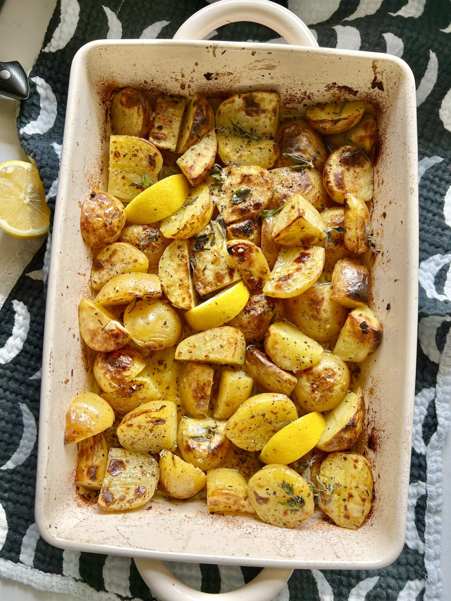

Lemonates Patates

Description
Lemonates patates sto fourno (oven-roasted lemony potatoes) combine lemon, garlic and herbs for some seriously delicious roasties. Perfect with meat, vegetables, or by themselves.
Ingredients
- 1kg yellow potatoes, chopped into large, equal chunks
- 100ml olive oil
- 4 cloves garlic, minced
- 2 tsp dried oregano
- 1 tsp salt
- Black pepper
- 2 large lemons, juiced
- Parsley, chopped
Method
- Preheat oven to 200°C.
- In a large baking dish, toss potatoes with olive oil, garlic, dried oregano, salt and pepper to taste until coated. Spread in an even layer and bake for 20 minutes
- Remove from oven and pour in the stock. Toss to coat and spread out and roast again for 15 minutes.
- Remove from the oven and add in the lemon juice. Toss to coat and return to roast again for 30-25 minutes or until fork tender.
- Top with parsley to serve.